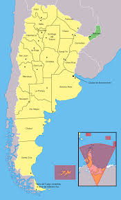

About me

My name is Matias Tau, I am 35 years old, and I am from the north of Argentina. I work in my own small business as a furniture maker. I am passionate about exercising, both training in the gym and going for bike rides in my free time. I also really like technology, which is the reason I started studying this field.
Misiones, Argentina
Misiones, a rugged province in northeastern Argentina, is home to one of the world's largest waterfalls. Stretching for 2.7km and straddling the border with Brazil, famed Iguazú Falls encompasses hundreds of separate cascades, including the 80m-tall Garganta del Diablo (“Devil’s Throat”). Surrounding the falls is Iguazú National Park, a subtropical rainforest with diverse wildlife and hiking trails.